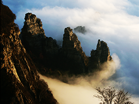
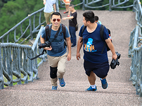
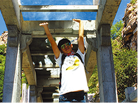
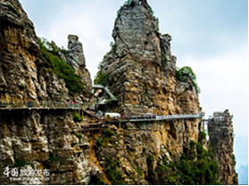
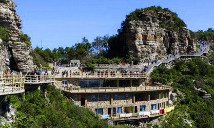
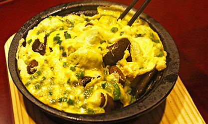
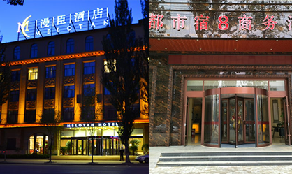
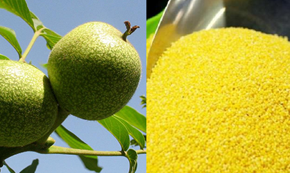
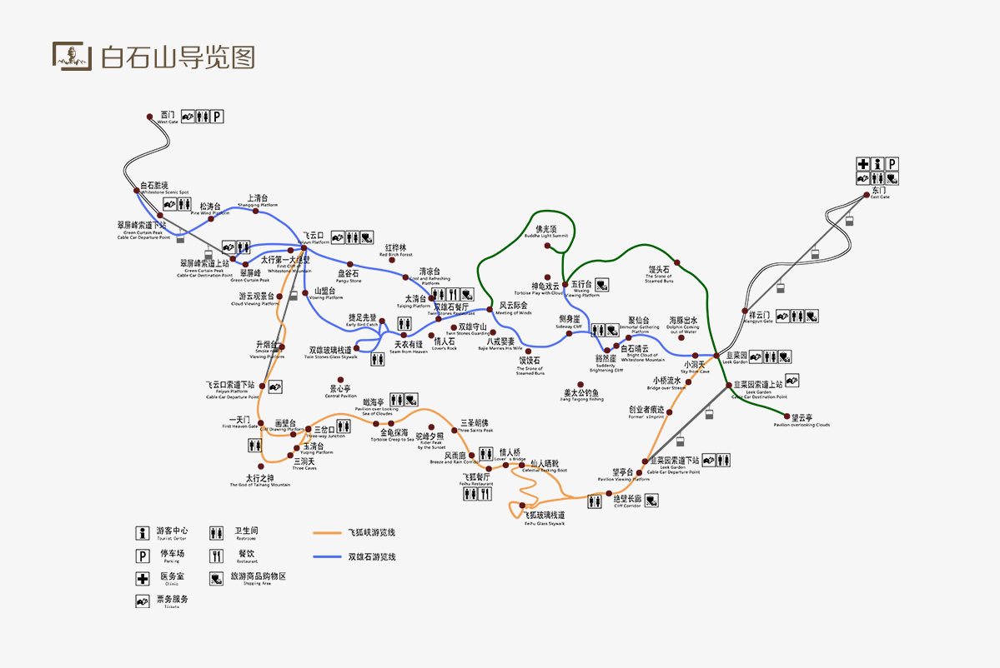
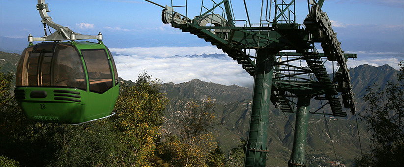

景区活动

涞源白石山景区冬季游
2016.05.27旅行途中，大家谈笑风生。帅气的导游耐心给大家讲解白石山的路线、重旅行途中，大家谈笑风生。帅气的导游耐心给大家讲解白石山的...

白石山探险之旅
2016.05.27旅行途中，大家谈笑风生。帅气的导游耐心给大家讲解白石山的路线、重旅行途中，大家谈笑风生。帅气的导游耐心给大家讲解白石山的...

玻璃栈道挑战赛
2016.05.27旅行途中，大家谈笑风生。帅气的导游耐心给大家讲解白石山的路线、重旅行途中，大家谈笑风生。帅气的导游耐心给大家讲解白石山的...

追云白石山：跌进一个奇幻梦境
2016.05.27旅行途中，大家谈笑风生。帅气的导游耐心给大家讲解白石山的路线、重旅行途中，大家谈笑风生。帅气的导游耐心给大家讲解白石山的...
餐饮美食
就餐推荐
景区双雄石餐厅：位于海拔1900米双雄石景点附近，属于景观餐厅，可坐观双雄石雄伟壮观，同时缓解旅途劳累。
涞源特色风味小吃
枣云糕、炸糕、煎饼、莜面、荞面、小米饭、搅粥、涞源豆腐。
住宿／购物
住宿推荐
漫臣酒店：涞源县百泉路111号,电话：0312-7370707。
都市宿8商务酒店：涞源县百泉东路188号，电话：0312-7355000。
购物
涞源核桃：穿越千年，走进神秘契丹，感受辽宋战火纷飞。
山韭菜：涞源县遍山的山韭菜，是这里唯有的特产之一。
如何到达
北京路线
（全程186公里） 2-3个小时：出杜家坎，走京港澳（G4），过河北涿州收费站也叫北京南收费站，南行18公里右转“京昆、廊涿”方向，一直向西。到“涞源白石山”高速口下即到。(全程190公里） 2个小时西六环石门营站入口，15公里后右转石家庄（G5）方向，（从这里是118公里）从镇江营站上京昆高速—张石高速，直到“涞源白石山”高速口下即到。
三江南路线
（全程240公里）3-4小时：津保高速→霸州西→固安方向→廊涿高速→张石高速“涞源白石山口下”。
怀化南路线
（全程295公里）3→4小时：京昆高速→北京方向→涞水枢纽→张石高速→涞源白石山口下
如何游玩
路线一
海拔1900米精华观光游览线
游览时间2-3小时，全长5000米
适合中老年、儿童
途经景点：
韭菜园→小洞天→海豚出水→聚仙台→白石晴云→豁然崖→侧身崖→馍馍石→八戒娶妻→风云际会→双雄石餐厅→红桦林→飞云口→山盟台→双雄玻璃栈道→天衣有缝→双雄石餐厅→小洞天→韭菜园
路线二
海拔1600米-1900米深度全景游览线
游览时间4-6小时，全长7900米
适合中青年、学生
途经景点：
韭菜园→创业者痕迹→望亭台→绝壁长廊→飞狐玻璃栈道→仙人晒靴→情人桥→飞狐餐厅→风雨廊→三圣朝佛→驼峰夕照→金龟探海→瞰海亭→三岔口→三洞天→太行之神→一天门→飞狐峡→飞云口→山盟台→双雄玻璃栈道→天衣有缝→双雄石餐厅→风云际会→八戒娶妻→馍馍石→侧身崖→豁然崖→白石晴云→聚仙台→海豚出水→小洞天→韭菜园
路线三
海拔1600米-1900米-2100米健身挑战游览线
游览时间6-7小时，全长8500米
适合登山、户外、摄影爱好者
途经景点：
韭菜园→创业者痕迹→望亭台→绝壁长廊→飞狐玻璃栈道→仙人晒靴→情人桥→飞狐餐厅→风雨廊→三圣朝佛→驼峰夕照→金龟探海→瞰海亭→三岔口→三洞天→太行之神→一天门→飞狐峡→飞云口→山盟台→双雄玻璃栈--天衣有缝→双雄石餐厅→风云际会→佛光顶→五行台→馒头石→韭菜园

景区索道：
索道位于白石山风景区的各核心区，穿梭于景区景点的密集区。当您乘坐索道时，白石山一片片原始森林层峦叠翠的山岳无限美景便尽收眼底。
景区目前有四条索道:
祥云门索道：55元/人 韭菜园索道：45元/人（修建中...） 飞云口索道：45元/ 人碧溪索道：65元/人（修建中...）
周边景区
十瀑峡
空中草原
咨询电话
400-843-8433
0312-5366056
投诉电话
0312-5366057
救援电话
0312-5366058